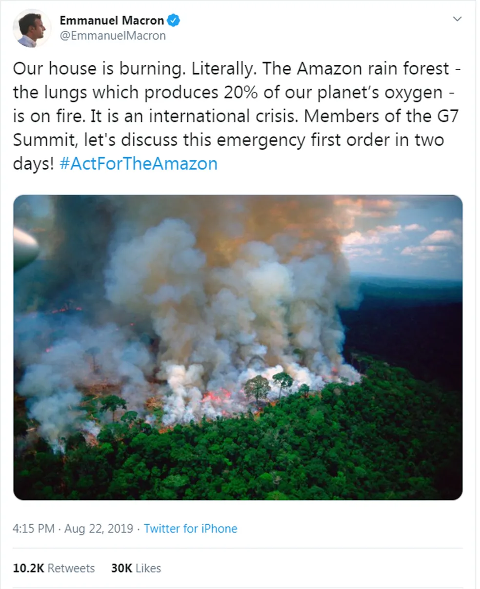
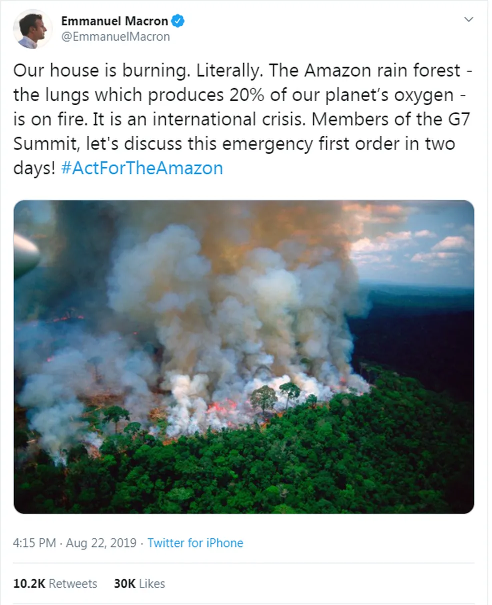

Química ambiental e as FAKE NEWS
A Química Ambiental é o campo que estuda os processos químicos naturais e antropogênicos para esclarecer os mecanismos que controlam a quantidade de substâncias na natureza. Por sua vez, as Fake News se referem a informações falsas divulgadas.
A química ambiental e as fake news relacionam-se quando a disseminação de informações falsas distorce a percepção pública dos impactos ambientais, como a poluição do ar, da água e do solo, e os perigos de produtos químicos, minando a confiança na pesquisa científica legítima.
 
